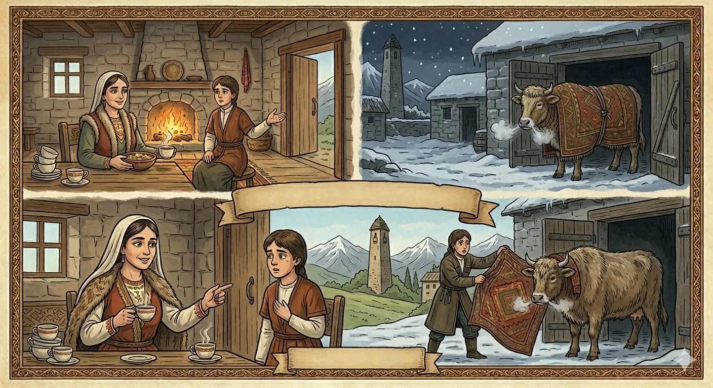

И.А. Дахкильгов. Хьехаме дувцарш - поучительные рассказы-притчи.
И.А. Дахкильгов. Хьехаме дувцарш - поучительные рассказы-притчи. Из ингушского фольклора.

ТӀера палаз Ӏобаккха
Шийлача Ӏан сайрийна етт бийтта а яьнна, Ӏатта букъа тӀа цхьа палаз ӀотӀабиллаб цхьан фусам-нанас. ПаргӀат а яьнна, цӀагӀа пхьор даа Ӏохайнай из. Сихъенна йоагаш пишк а йолаш, дӀаеннача дикка даахӀама а диа, тӀа дӀайха чай а менна, шелъенна хинна фусам-нана геттар дика йӀохъеннай. Шийна тӀакхелла бола цхарал Ӏо а баьккха, ший йоӀага аьннад цо: - Йоле, вай Ӏатта тӀера палаз Ӏобаккха, чӀоагӀа йӀохъеннай вайна.
РУССКИЙ
Сними с нее палас
В холодный зимний вечер некая хозяйка подоила корову и накрыла ее паласом. Освободившись от дневных забот, хозяйка села ужинать. В доме печь была жарко натоплена. Ужин был горячий. Съев его, хозяйка выпила еще и горячего чаю. Разогрелась она, сняла с плеч пуховый платок и сказала своей дочери: "Наверное, нашей корове жарко, сходи и сними с нее палас".
ENGLISH
Take the blanket off her
One cold winter's evening, a housewife milked her cow and covered it with a blanket. After finishing her daily chores, she sat down to supper. The stove in the house was burning brightly. Supper was hot. After eating, the housewife drank some hot tea. Feeling warmed up, she took the shawl off her shoulders and said to her daughter, 'The cow must be hot. Go and take her blanket off.'
НОХЧИЙН
ТӀера палс охьабаккха
Шийлачу Ӏан суьйренна бетта йетт оьзна а йаьлла, аьттан букъан тӀе цхьа палс тӀебиллина цхьана хӀусам-нанас. ПаргӀат а йаьлла, цӀахь пхьор даа охьахиъна иза. Сихайелла йогуш пеш а йолуш, дӀахӀоттийна дикка хӀума а йиъна, тӀе довха чай а мелла, шелйелла хилла хӀусам-нана гуттар дика йохъелла. Шена тӀекхоьллина йолу бой охьа а йаьккхина, шен йоӀе аьлла цо: - Йоло, вай аьттан тӀера палс дӀабаккха, чӀогӀа йохйелла вайна.
ПОГОВОРКИ
Бер ца дийлхача, нанас накха хьекхабац. Мать не даст груди ребенку, пока он не заплачет. A mother will not give her breast to a child until it cries. Бер ца дилхича, нанас накха ца ло.Визачоа берригаш биза хет, мецачоа берригаш меца хет. Сытый всех считает сытыми, голодный всех считает голодными. The full man thinks everyone is full; the hungry man thinks everyone is hungry. Вуьзначун берриш буьзна хета, мецачун берриш меца хета.ЙӀовхалах модж мустаялар тов шелалах пӀелг бохьабечул. Пусть (лучше) от жары борода повылезет, чем от холода палец отморозить. Better to lose your beard to the heat than a finger to the cold. Йовхалах мож мустайалар тоьлу шелонах пӀелг дахьобечул.Мецвенначунга яахӀама а ма кийчаейта, шелвенначунга цӀи а ма лотаейта. Не позволяй готовить еду голодному, а печь разжигать промерзшему. Don't let a hungry man cook, and don't let a frozen man light the fire. Мацвеллачуьнга йаахӀума а ма кечйайта, шелвеллачуьнга цӀе а ма латайайта.Сийг кхоачача йӀовхал а кхоач. Куда долетит искра, туда дойдет и тепло. Wherever a spark reaches, warmth reaches too. Суй кхаьчначе йовхо а кхаьчна.Сов кходеш леладаь дегӀ, боча дувла даьннад. Тело, которое чрезмерно оберегали, изнежилось. A body pampered too much grows soft. Сов кхоадеш леладина дегӀ, боча дийла даьлла.ЦӀаьхха шурах йиза бӀийг ловзаийккхай. Нежданно насытившись молоком, ягненок взыгрался. The lamb, suddenly sated with milk, began frolicking. ЦӀаьххьана шурах йуьзна бекъа ловзаиккхина.ЦӀерга гӀийрта циск мерцад. Кошка, которая жалась к очагу, опалилась. The cat that huddled close to the hearth got singed. ЦӀега гӀиртина цициг мерцина.Шелалца лета лазар сица мара къаьстадац. Болезнь, приобретенная от холода, покидает человека только при его кончине. An illness caught from the cold leaves a person only with death. Шелонца летта лазар сица бен къаьстина дац.Ший кхуврч наьхачул бӀайхагӀа ба. Свой очаг теплее чужого. One's own hearth is warmer than another's. Шен кхерч нехачул бовха бу.Шелалах пӀелга бухьиг лозабоаллачулла, йӀовхалах модж мустлойла са. Пусть у меня лучше от жары борода повылезет, чем от холода заболит кончик пальца. Let my beard fall out from the heat rather than my fingertip ache from the cold. Шелонах пӀелга буьхьиг лазаболучулла, йовхонах мож мустлойла сан.Шелвенначоа йӀайхача пишкал дӀайха даар тол. Продрогшего горячая пища согревает лучше жаркой печки. A hot meal warms a frozen man better than a hot stove. Шалвеллачун йовхачу пешал довха даар тоьлу.Ӏа сигала дисадац, цкъа бӀаьсти яланза, яргъяц. Зима не задержалась на небесах, и весна обязательно наступит. Winter never lingers in the sky forever; spring is sure to come. Ӏа стиглахь дисна дац, цкъа бӀаьсте йаланза йер йац.Ӏай – кетар, аьхки – гӀовтал; Ӏай – соалоз, аьхки – ворда. Зимою – шуба, летом – бешмет; зимою – сани, летом – арба. In winter a fur coat, in summer a beshmet; in winter a sleigh, in summer a cart. Ӏай — кетар, аьхка — гӀовтал; Ӏай — салаз, аьхка — ворда.